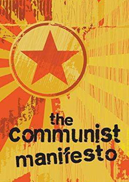
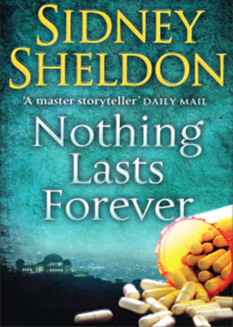
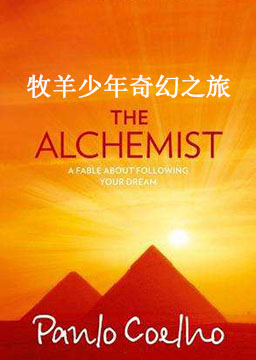
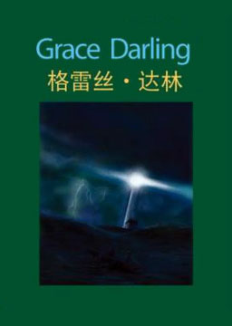
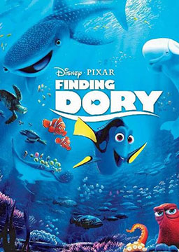
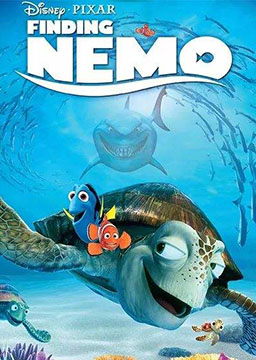
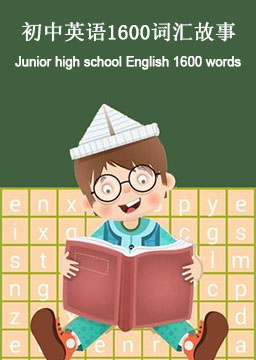

双语小说
收录中英文双语小说300多部，包括世界经典名著、社会小说、悬疑小说等短篇和长篇小说，可按照初中难度、高中难度和大学难度分类阅读，每部小说都有分段中英文对照，点击单词可查看中文翻译。

查令十字街84号 (84, Charing Cross Road)
作者：海莲·汉芙 (Helene Hanff) [美国]
海莲爱书，弗兰克是个严肃古板但很专业的书商，她要的各类离奇古怪的绝版旧书他都能找到，而且细心地为她留意不同版本。信任和欣赏很快建立。于是，海莲开始给书店的人邮寄整箱的鸡蛋和大块大块的火腿。那时候，英国处于重建时期，物资匮乏。海莲的善举获得了书店人和书店经理一家人的尊重。他们给她送了漂亮的手工桌布，那是弗兰克的邻居的作品。而书信往来也开始从海莲和弗兰克之间扩大到海莲和书店员工以及弗兰克一家人之间。通信频率不一致，有时候一个月好几封，有时候一年几封。对话内容从最初的找书扩展到相互发牢骚扯家常。书店后来甚至为海莲预先邮寄她想要但是暂时无力支付的书本。
共产党宣言 (The Communist Manifesto)
作者：卡尔·马克思、弗里德里希·恩格斯 (Karl Heinrich Marx, Friedrich Engels) [德国]
《共产党宣言》又译《共产主义宣言》是马克思和恩格斯为共产主义者同盟起草的纲领。马克思把家庭关系置于资本主义的关系中加以考察，指出资本主义把家庭关系变成金钱关系，在这种关系中，妇女处于单纯生产工具的地位。因此，妇女解放，其妇女自身的解放而言，是使妇女不再处于单纯生产工具的地位，与男人享受平等的社会权利，成为全面而自由发展的人。要做到这一点，须消灭私有制。《宣言》还指出无产阶级在夺取政权后，必须在大力发展生产力的基础上，逐步进行社会改造，进而达到消灭阶级对立和阶级本身的存在条件。当生产资料私有制和阶级消灭以后，国家消亡。到那个时候，代替存在着阶级和阶级对立的资产阶级社会的，是这样一个联合体，在那里，每个人的自由发展是一切人的自由发展的条件，即进入共产主义社会。
世无定事 (Nothing Lasts Forever)
作者：西德尼·谢尔顿 (Sidney Sheldon) [美国]
三位年轻女医生的命运，她们的事业、爱情、梦想和不寻常的遭遇。她们来自不同的家庭背景，她们的少女时代或是动荡的或是优裕的或是羞辱难言的。她们一起从医学院来到旧金山这所大医院，决心做个好医生。但命运在捉弄她们，尽管她们正直善良。医疗事故和安乐死、巨额遗赠和预谋杀人，“白马王子”和黑帮头目，一桩桩始料不及的事件落在她们头上。她们以女性的柔弱力量抗争着，经过种种曲折，最后虽是正直和善良得胜，但付出的代价却是惨重的。
牧羊少年奇幻之旅 (The Alchemist)
作者：保罗·科埃略 (Paulo Coelho) [巴西]
巴西作家保罗·科埃略创作的长篇小说，自1988年出版后，便风靡全球，畅销160多个国家，登上20多个国家畅销榜第1名，荣获33项国际大奖，已经被翻译成68种语言，是当今在世作家作品中被翻译最多的小说。全球销量超过6500万册，是历史上最畅销的葡萄牙语小说。这部小说被誉为20世纪最重要的文学现象之一。内容简介：西班牙少年圣地亚哥十分喜欢旅行，于是去做了牧羊人。牧羊时，他遇见了撒冷王麦基洗德，他又放弃了羊群，去追寻他所梦见过两次的金字塔附近的宝藏。其间，他从西班牙最南端的台里发渡海，去了非洲。在北非摩洛哥的丹吉尔，他被小偷掠走钱财。后来他学会了阿拉伯文，他为一位永远把朝圣麦加放在心底而不去实现的水晶商人创造性地工作了十一个月又九天。之后他加入横越撒哈拉沙漠的商队，碰到了一位一心求教炼金术士的英国人。在住着炼金术士的费奥姆绿洲，圣地亚哥遇见少女法谛玛，与她一见钟情。商队因部落战争而停滞在绿洲。圣地亚哥预言军队会对绿洲实施突袭，预言应验了，他被聘为绿洲的参事，而炼金术士却催促圣地亚哥重新踏上寻宝之途。途中，圣地亚哥被军队所掳，炼金术士以圣地亚哥的钱财为自己赢得三天的时间，圣地亚哥若能将自己变成风就放了他们，圣地亚哥在沙漠、风与太阳的对话中，接触了天地之心，也如愿脱身。圣地亚哥到了吉萨，见识了金字塔的壮美，部族战争的难民又一次夺去他的金子。难民临走时，难民首领说了自己重复做过的一个梦：宝藏就在圣地亚哥曾经梦到金字塔的那座废弃教堂里。圣地亚哥回到来时路，在原来熟悉的牧羊处挖出宝藏，实现犒赏吉普赛人的诺言，最终与少女法谛玛终成眷属。
不能承受的生命之轻 (The Unbearable Lightness of Being)
作者：米兰·昆德拉 (Milan Kundera) [捷克]
这部小说是昆德拉1975年流亡法国后用捷克语创作的，1984年以法文版首发。改编电影《布拉格之恋》，获得了美国奥斯卡金像奖、美国金球奖提名，1988年美国国家影评人协会奖最佳影片奖和最佳导演奖、英国学院奖最佳改编剧本奖等奖项。内容简介：一九六八年苏联入侵捷克时期，民主改革的气息演变成专横压榨之风潮。托马斯是一个外科医生，因为婚姻失败，既渴望女人又畏惧女人，因此发展出一套外遇守则来应付他众多的情妇。有一天他爱上一个餐厅的女侍——特丽莎，他对她的爱违反了他制定的原则，甚至娶她为妻，但是托马斯灵肉分离的想法丝毫没有改变，依然游移在情妇之间，对全心爱他的特丽莎是一种伤害。特丽莎经常在极度不安的梦魇中醒来，经常猜忌与怀有恐怖想象。 此时捷克政治动乱不安，在苏黎世一位权威医生希望托马斯去那里发展的呼唤下，两人于是决定去那里生活。但是面对陌生环境的不安与丈夫仍然与情妇私通，特丽莎决定离开，回到祖国。但是命运与抉择让托马斯回去找她，此后两人没有再分离。他们意识到在一起是快乐的，是折磨与悲凉里的快乐，彼此是生命中甜美的负担。后来他们死于一场车祸。萨宾娜是一个画家，曾经是托马斯的情妇之一，也是特丽莎妒忌的对象。萨宾娜一生不断选择背叛，选择让自己的人生没有责任而轻盈的生活。她讨厌忠诚与任何讨好大众的媚俗行为，但是这样的背叛让她感到自己人生存在于虚无当中。弗兰兹是被萨宾娜背叛的情夫之一，他因为她而放弃自己坚持的婚姻与忠诚，但是由于萨宾娜的背弃，让弗兰兹发现自己过去对于婚姻的执着是可笑的，纯属多余的假想，他的妻子只是自己对于母亲理想的投射。离婚后，自由自立的单身生活为他生命带来新的契机，并且了解萨宾娜只是他对革命与冒险生活的追随。后来他与他的学生相恋，在实际参与一场虚伪游行活动后，意识到自己真正的幸福是留在他的学生旁边。一场突然抢劫中，弗兰兹因为想展现自己的勇气而蛮力抵抗，却遭到重击，在妻子的陪伴下，无言的死于病榻上。本意：生命中有太多事，看似轻如鸿毛，却让人难以承受。
格雷丝·达林 (Grace Darling)
作者：蒂姆·维卡里 (Tim Vicary) [英国]
大海有很多面。有时它平静温和，如同游泳池般安宁。有时它狂野、暴躁而危险。我们筑堤抵挡大海，大海却把它们冲走。我们造船在海上航行，大海却把它们劈成两截，如同孩子折断玩具。当大海露出其狰狞的一面时，它就像一头野兽，一心只想着杀戮。当然，你并不害怕大海。你在陆地上很安全，温暖而干燥。但若你是在怒海中的一条小船上，脸上是飞溅而来的海水，耳畔是咆哮不停的海风，那情况就不一样了。对我们来说，要做到不害怕很容易；这只是一本书而已。但对于格雷丝·达林，这不是故事。这是非常真实、寒冷而狂野的夜晚，那一夜她和大海抗争，毫无畏惧。
海底总动员2 (Finding Dory)
作者：迪士尼 (Disney) [美国]
故事发生在第一部结束后一年，总失忆的蓝唐王鱼多莉（Dory）跟小丑鱼父子成了邻居，生活上互相关照，相处融洽。有一天她随尼莫（Nemo）去上学，路上遇到了举家迁徙的蝠魟，勾起了她对家的向往。患上思乡病却不知道自己身世的多莉决定去寻找自己的父母。在小丑鱼尼莫和他的父亲马林（Marlin）的帮助下，她从澳大利亚大堡礁来到了美国加州海岸，却意外被海洋生物研究所捉走了。在那里，她遇到了很多新朋友，有章鱼、海狮、白鲸 。
海底总动员1 (Finding Nemo)
作者：迪士尼 (Disney) [美国]
在澳洲大堡礁的深海中，小丑鱼爸爸玛林和儿子尼莫简单幸福的生活着，可是爸爸做事常常畏首畏尾，是个胆小鬼，尼莫觉得爸爸很不勇敢，甚至有点看不起自己的爸爸。小尼莫却天不怕地不怕，跟同伴们去水面玩耍的时候，竟然被渔网捞了起来，辗转被卖到一家牙医诊所。玛林对儿子的生死未卜感到十分的担忧，就算平时不能大胆行事，为了儿子也要勇敢豁出去了。可是在路上遇到了很多艰难与恐惧，令他十分胆怯。幸好他遇到了好心的多瑞，一路与他作伴。父子俩都遇到了很多热心的帮助，最终都能重逢，玛林也从此成为儿子以及大家心中的英雄。
初中英语1600词汇故事 (Junior high school English 1600 words)
作者：未知 (unknow) [中国]
把初中英语1600个单词巧妙地编成70篇小故事，将单词放在文段中去理解，联系上下文，加以一定的推测。而且文章是连贯的、具象的，更加能够加深印象，提升记单词的效率。
人性中的善良天使 (The Better Angels of Our Nature)
作者：斯蒂芬·平克 (Steven Pinker) [加拿大]
一部人类心理进化史，开创性地运用了最前沿的心智理论研究人类历史，以震撼人心的方式剖析促发暴力的人类心理的内外因素。本书的结论必然会引起争论，但这只是一个开端，它将引导我们用全新的角度看人性、看历史、看世界，让我们深思人类社会的未来命运。我们身边到处都是血腥历史的证据：《旧约》中的大屠杀，《新约》中的十字架；莎士比亚戏剧和格林童话中的血腥肢解；英国王室对其家眷的斩首，美国建国者之间的决斗；还有对殴打妻子、虐待儿童、灭绝原住民的司空见惯和冷漠接受。在阅读了血腥的战争和令人毛骨悚然的罪行之后，我们不由得掩卷发问：“世界会变成怎样？”但是我们很少问：“过去的世界究竟有多糟糕？”实验心理学家、认知科学家、畅销书作家斯蒂芬·平克在这本令人震撼的新著中告诉我们，过去的世界更加糟糕。事实上，我们正生活在人类历史上最和平的时代。